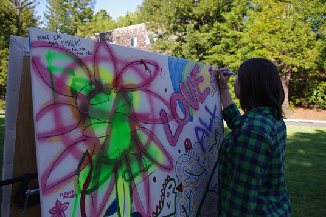

The Free Walls Project (2011–2012)
click to expand

Media


The Free Walls Project was a collaborative effort with Daniel Christopher and Tony Cutrono, exploring ideas of what constitutes “public art,” and who can create it.
Engaging with the Santa Cruz community, a mobile wall was brought to various public spaces where people are invited to draw, paint, and collage. The wall was then transported and displayed throughout the local community as a living work in progress, with new additions being made by unsuspecting citizens at every stop.
In the future, the team is hoping to merge this experience into a digital represetntation and archive of the wall's evolution allowing the piece to continue as an online experience.